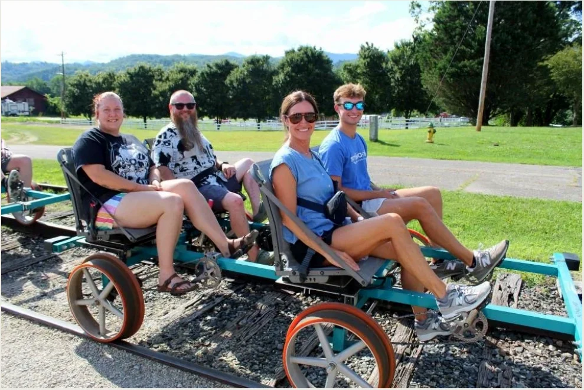

ANDREWS, NC / THE BLUE RIDGE MOUNTAINS
TAKE THE
TRACK LESSTRAVELED.
No traffic. No ordinary sightseeing. Just you, the open rails, mountain air, and one unforgettable ride to a historic tunnel.

REAL RIDERS / REAL RAILSNOT YOUR
AVERAGE
BIKE RIDE ✳
AVERAGE
BIKE RIDE ✳
35° N / 83° W